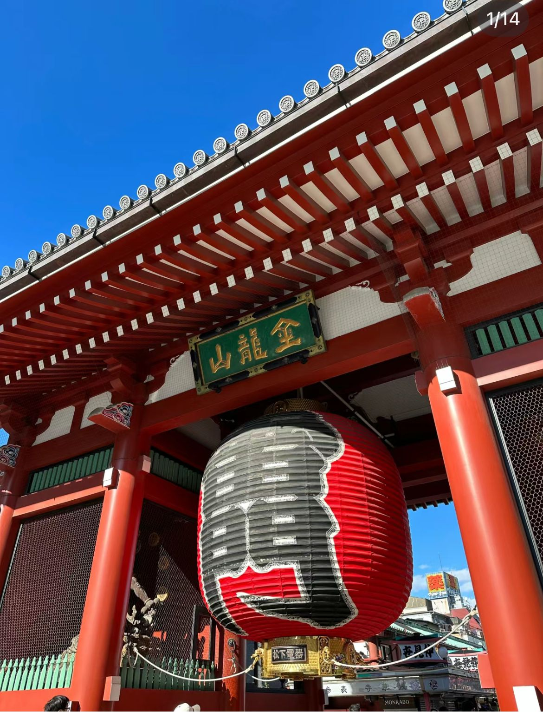
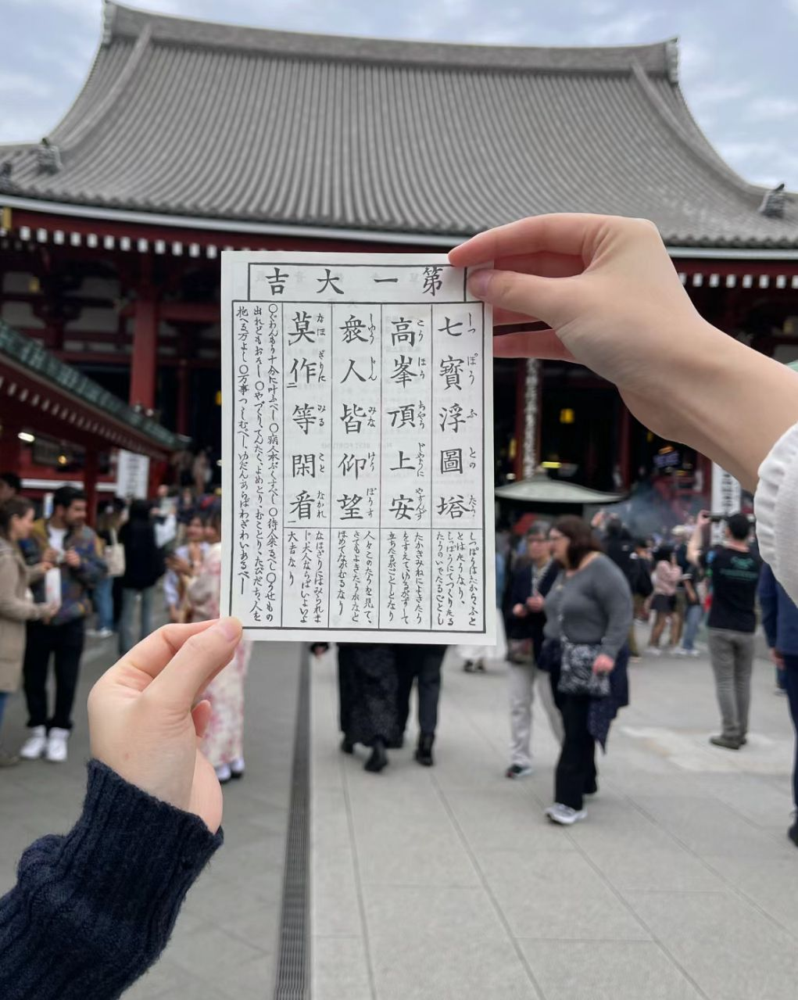
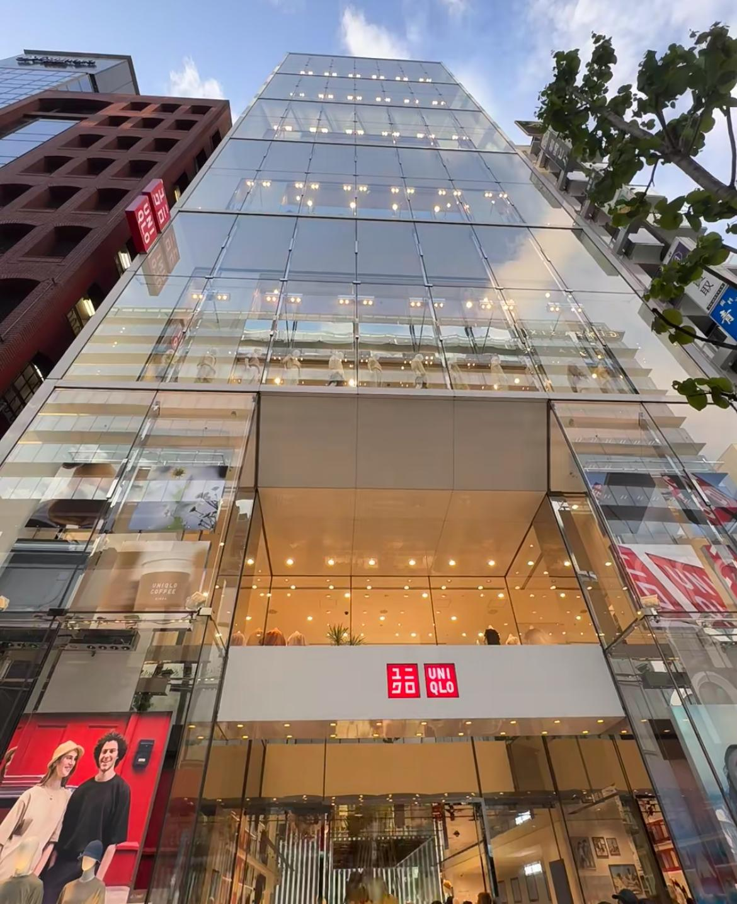
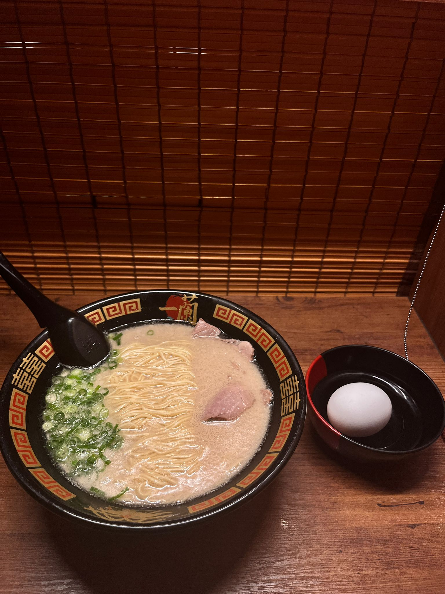

Discover Asakusa Temple & Ginza
Asakusa Temple
On our final day in Japan, we decided to visit Asakusa Temple, which is one of the most famous attractions in Tokyo. As we strolled through the monastery, we were mesmerized by its unique architecture.

Autograph
We also tried to get an Autograph at Asakusa Temple and got one with a good meaning!

Largest Uniqlo
On our last day in Tokyo, we chose to go shopping in Ginza, one of the world's three busiest centers, along with the Champs Elysees in Paris and Fifth Avenue in New York. We went shopping at the world's largest Uniqlo. The freedom to customize your clothes is one of the special features there, and we also customized our own short sleeves at Uniqlo.

Ichiran Ramen
After walking around Ginza we went to a neighborhood Ichiran Ramen for our final meal of the trip to Tokyo. The single cubicle in the restaurant provided a cozy, personal space in which to eat a full meal and embark on our return trip.
